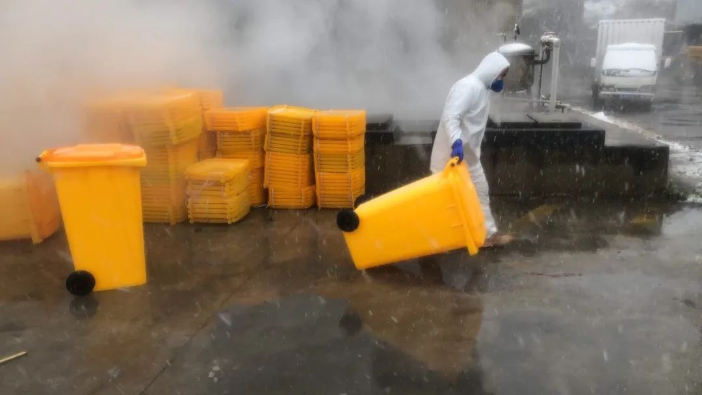
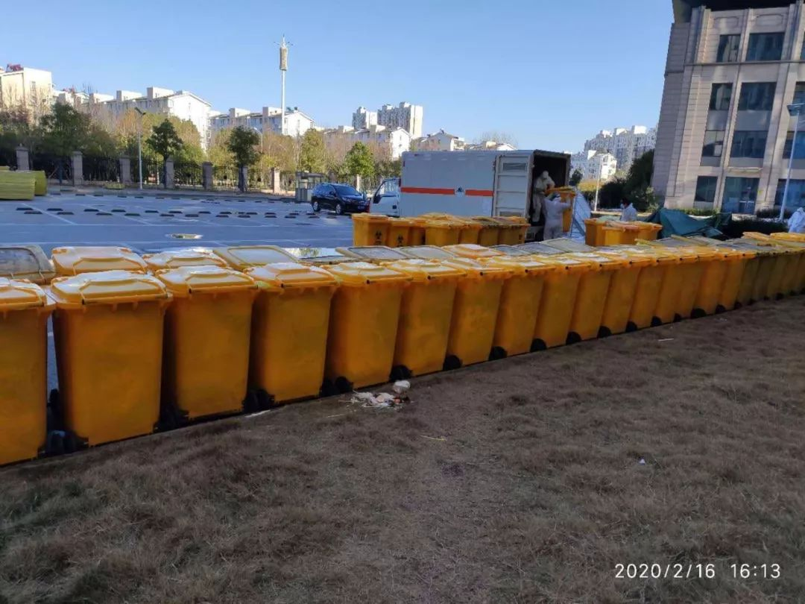

一名武汉大学生的自述：00后的我，相信不会再畏惧了
原文链接 备份链接 一周多前小南发起了一场征集——“疫情过后你最想做的一件事”,得到了读者朋友们的积极参与。下文是00后武汉大学生薛珂发来的一篇自述。 文 | 薛珂 编辑 | 小豆 出生于2000年，今年虚岁20，我是武汉华中科技大学的一 …
**记者/郭慧敏 实习记者/胡琪琛
**
编辑/石爱华 宋建华

一线员工在医院准备清运医疗废物
新冠肺炎疫情爆发期间，医疗废物（以下称“医废”）数量大幅增长，武汉乃至全国医疗废物处置能力面临挑战。
为缓解这一情况，众多单位组队支援武汉医废处理。湖北襄阳市中油优艺环保科技有限公司是其中之一。
1月30日，第一批支援队伍从襄阳出发前往武汉，截至目前已出动四批援助力量，共85名工作人员，35辆医废运输车。针对目前武汉市医废产量、处置能力、待解问题，深一度采访了中油优艺董事长王春山。
根据《武汉市2018年固体废物污染环境防治信息公告》，2018年武汉市医疗废物产生量1.73万吨，处置量1.73万吨。王春山估算，疫情发生到现在，武汉每天的医废产生量上百吨，是平时的约三倍。
为了实现医疗废物的“日产日清”，前线工人面临超负荷工作，医废桶紧缺的情况。“襄阳有一千多感染者，每天的医废产生量增加了10吨，武汉市有六万多感染者，医废处置压力可想而知。”

等待运输、处置的医疗废物

武汉医废日产生量是平常三倍
深一度：武汉目前的医疗废物现状如何？
王春山：目前武汉市每天的医废产生量没有一个确定的数据。我们从一线反馈了解的情况，1月底，武汉医废产量大概是每天70吨，2月初达到每天80吨，最近能达到100吨以上，是以往平时的近三倍。
深一度：武汉医废处置能力如何？
王春山：一般来说，医废企业所有的设施建设都会在正常标准的基础之上，额外增加一些余量来建设。
据我所知，武汉本地的医废处置企业目前只有汉氏环保工程有限公司一家。实际上，这家企业几年前就面临着改建和扩建的问题，但由于种种原因没有实施。现在汉氏一天最多能处理50吨医废。
深一度：湖北省一共有多少家医废处理企业，有多少家在支援武汉？
王春山：湖北省每个地级市都有一家专门处理医废的企业。目前，中国节能环保集团有两辆车在帮忙收集医废，中国环境基金会也捐了几辆车，我能了解到的支援情况就这些。
深一度：你们是否具备支援条件？
王春山：疫情爆发以后，突然间增加这么多的医废量，哪一家企业也不可能单独承担解决。
2019年，我们公司刚在襄阳新建了一个厂子，又购入了五十几台医废运输车。这批车还没有给各个分厂分配出去，正派上用场。
武汉那边不仅是处置能力不足，收集运输方面也跟不上，我们正好具备医废运输、处置的条件，肯定要去支持同行。
深一度：支援队伍到武汉的感受如何？
王春山：我是跟第三批支援队伍一起来的，下午一点多从襄阳出发，六点左右进入武汉城区。因为车辆限高等原因，我们的车队在城区跑了六个多小时才从城区西北部转到东南部的湖北省人民医院，这个过程中几乎没有碰到任何人和车。我们在城市已经习惯了车水马龙，现在整个城市只剩下灯光。

除了支援车辆，武汉街头很少见到人员和车辆
医废运回襄阳焚烧处理
深一度：什么时间出发援助？
王春山：我们的第一批援助力量在1月30日就出发前往武汉了。截至目前共有四批援助力量，一共85个工作人员，35辆车，其中大车10辆，运力14吨，25辆小车，运力1.5吨。
深一度：疫情之下，工人们到武汉支援有准备吗？
王春山：我们在工作群里发了消息，大家自愿报名后，我们再根据情况进行调配。因为襄阳这边也面临着同样的问题，医废量由平时的10吨左右增长到现在的20吨，医废车也由9辆增加到20辆，我们需要在保证完成襄阳医废处理任务的基础之上，安排支援武汉的工作。
深一度：一线工人防护措施是否到位？
王春山：我们平时就比较注意防护，有一些长期性的物资储备，包括口罩、护目镜、手套、防护服、消毒液等。其中防护服只有基本储备，需要的时候随时打电话订货。
疫情爆发之后我们立即购买了一批物资，但是到后期供应跟不上，买也买不来。现阶段，政府给了我们很多物资支持，才能保证公司的正常运转。
得益于相对到位的安全管理，到目前为止，我们公司一千多员工没有一例感染。
深一度：你们的清运范围是什么？
王春山：现在的清运范围几乎涉及武汉全部的医院，包括部分火神山医院的医废清运工作。
2月18号，我们跟武汉市环保局进行了沟通，他们说会马上给我们划出七八家比较大的医院，由我们直接负责医废处理，这样便于整体协调和管理。
深一度：员工的工作状态怎么样？
王春山：第一批来的员工已经连续工作二十多天了，其他员工也大部分处于连续运转的状态，都是超负荷。我们给在武汉的员工安排了专门的住处，支援过后返回襄阳的人也要先回宾馆隔离。
深一度：工人具体的工作时间是怎样安排的？
王春山：每天早上八点左右，武汉各区环保局会来通知我们当日的行车路线，司机师傅直接过去清运。
小车装满后到中转处转给大车，大车装满后就回襄阳。现在基本上一天回一趟回襄阳，一般都是下午出发。
来之前，我们充分沟通过工作的具体内容，但是依然存在各种意外。一开始，我们按照两到三天的时间调派人手，最多不超过一个星期。来了武汉以后才发现，我们的支援不是应急性质的，可能要持续到武汉市防控指挥逐渐降级之后，目前没有看到医废产生量减少、工作量降低的趋势。

医疗废物从武汉运到襄阳后，投入回转炉进行焚烧处理
焚烧后作为固废填埋处理
深一度：这次疫情，武汉定点医院的医废都有什么？
王春山：医院里除了生活垃圾以外，基本都属于医疗废物。比如针管、针头、输液用品、手术器械、防护服，以及病人使用过的东西。
特别是疫情期间，被感染者所有的东西都要作为医疗废物处理，包括床单、被子、褥子、垫子、餐盒等等。目前医院区几乎所有垃圾都被归为医疗废物，因为你不知道这些东西有没有病毒。
深一度：医废的清运流程是怎样的？
王春山：我们的清运工作从“医废上车”开始。如果大型运输车能够进入医院，就直接把院方装好箱的医废搬运上车运回襄阳，如果大车进不去，就用小型车去医院收集，然后在固定地点转移到大车上。
在搬上车之前，工作人员会用84消毒液对医废桶进行喷雾消毒，搬上车之后再对车厢内外分别消毒，期间工作人员都穿着防护服，带着护目镜、口罩和手套。
医废运回襄阳公司之后，首先要过磅得出准确数量。大部分医院不具备过磅能力，只是按照医废桶的数量进行估算，每桶的重量大概在五十到一百斤之间，有时候一个桶里只装一床被子，没几斤重但很占地方。
最后，医废投入回转窑焚烧，焚烧之后的残渣作为固体废物运到垃圾场填埋。
深一度：焚烧之后的残渣还具有危险性吗？
王春山：基本不具备危险性。焚烧后的炉渣只剩下无机物，所有有毒有害的成分都已经消灭掉了，焚烧室的温度可达一千一百多度，病毒病菌无法存在。
深一度：类似新冠肺炎这样的传染病医废与普通医废在处置流程上有何不同？
王春山：整体流程差不多，但传染病医废处置对防护的要求更加严格。
尤其是收集运输的过程，我们与医废直接接触，被感染概率较高。医废桶都是从感染区出来的，装运过程中无法保证桶上没有任何病毒沾染，喷雾消毒属于简易消毒，做不到全面无死角。
平时的话，工人佩戴口罩和手套就行。但是类似新冠肺炎的传染病医废，在收集运输时，护目镜、帽子、全身防护服、手套、口罩都需要，除了护目镜可以在消毒之后循环使用，剩下的防护设备每天都得更换。
深一度：中油环保目前每天的清运量是多少？
王春山：我们每天都会统计清运数量，上报武汉市环保局和襄阳市环保局，每天大概二三十吨左右，包括武汉市内协助运输的医废和运往襄阳焚烧的医废。
最近，省内的危废企业也开始支援武汉医废处理工作，一些生活垃圾发电厂，也承担了部分非发热门诊的医废处理工作，否则全市医废处置还是有难度的。
从2月17日开始，武汉主要医院的医疗废物能接近日产日清。

工人们将医疗废物抬上运输车
“上车”前分类难 医废桶紧缺
深一度：目前武汉的医废处置有哪些难点？
王春山：一般来说“医废上车”之前应该做好分类，但前线的医护人员已经筋疲力尽了，没有时间精力分类。我们所收集运输的医废基本上没怎么分类，直接装到了医废桶里。
我们刚来的时候，一些医院医疗废物都是散装的，搬上车之前还需要装桶，增加了一道工序，就增加了一次风险。但医院病人那么多，院方也来不及做这些工作。
深一度：医废如何分类，不分类有何隐患？
王春山：疫情爆发之前医废没有作区分，爆发之后，会按隔离区、红区等区域去做区分。每个区域的医废因为感染性不一样，需要单独运走。
医疗废物的主要风险存在于焚烧前的那段时间。卸下车的医废桶放在场地，可能会有人经过或不小心接触感染性强的医疗废物，造成感染。但对于最终处置不会有影响，医废的结果都是烧掉。
深一度：除了医废分类问题，还有其他困难吗？
王春山：处置流程要想做到医废全程“不落地”的话，至少需要医废产出量三倍的医废桶才可以。
比如，一家医院每天会产生一百桶医废，必须保证有三百个桶可供使用，其中一百个放在医院收集医废，一百个在运输处置途中，一百个卸车之后正在清洗消毒准备再次投入使用。
疫情爆发之后，当地企业用上了所有库存的医废桶，环保部门也进行了捐赠，我们公司带过来一千多个，但还是不够。最后只能从当地环保部门调来几百个生活垃圾桶。
最近，我们让供应商紧急加工，加上库存，又发了三千多个过来，现在光我们公司就投入了五六千个医废桶，但只能说有所缓解。
另外，有的医院还没有完全建设好，但需要迅速启用，场地上还都是施工用房等，我们都是自己请的叉车对现场进行清理，“打通”收集运输医废的通道。
【反侵权公告】本文系北京青年报在今日头条独家首发，未经授权，不得转载。


死亡病例过千，尚无一例病理解剖 | 深度对话

送别李文亮医生：愿天堂没有病毒| 深度报道

鄂A牌车30小时归乡记 | 深度报道
原文链接 备份链接 一周多前小南发起了一场征集——“疫情过后你最想做的一件事”,得到了读者朋友们的积极参与。下文是00后武汉大学生薛珂发来的一篇自述。 文 | 薛珂 编辑 | 小豆 出生于2000年，今年虚岁20，我是武汉华中科技大学的一 …
原文链接 备份链接 岛语 非常时期，武汉成了全国人民挂念、祈福的城市。封城后，武汉人民的真实生活是什么样？ 武汉在发生哪些变化？ 正和岛自1月26日起特别推出“叶青专栏”。叶青是一位定居武汉40年的市民，也是一名学者和官员。在过往多期的专 …
原文链接 备份链接 武汉水系多，长江汉水交汇，划分出武汉三镇。江水浩荡，码头就多，拼码头靠什么？靠“斗狠”。武汉的汉正街在江边，过去全国各地的小商贩来打货，江边有很多做苦力的“扁担”，与重庆棒棒一样，帮小老板们用扁担挑子来运货，靠苦力 …
原文链接 备份链接 疫情严峻，武汉仍在不断征集新冠肺炎床位。重压之下，各家医院肿瘤科「只出难进」，有患者被迫出院，通过网络发帖求助；也有患者试图寻求省外求医路，却被两边「入院接收单」与「通行证」夹在中间，难寻答案。 —— 同一个家庭里的新 …
原文链接 备份链接 文/六筒 李岩半年前刚去过武汉，和家人去旅游，主要想看看黄鹤楼。那还是夏天，热气蒸得人头上冒烟。高温挡不住蜂拥的游客，摩肩接踵，拥塞的车辆在大道上艰难挪动。“真是个大都市”，她想。 李岩是河北医科大学第二医院呼吸与危重 …